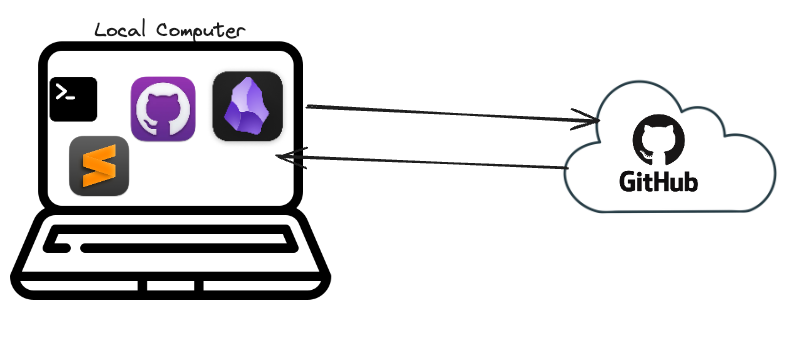

Disclaimer
Предисловие
В общем вдохновением для этой статьи стало видео одной замечательной девушки Nicole, которая довольно известна в Obsidian сообществе. Также у нее в блоге написана статья с которой по сути переведен весь текст c небольшими правками.
В данной статье я постараюсь своими словами, на русском языке объяснить как создать свой блог в интернете бесплатно на основе движка Quartz 4.0 и редактора Obsidan и бесплатного хостинга от GitHub.
Как это работает: (вкратце)
- Разворачиваем локальный сервер на движке Quartz 4.0 у себя на компе
- Закачиваем весь проект в GitHub, включаем поддержку GitHub Pages.
- Редактируем с помощью Obsidian, апдейтим с помощью Git

В итоге получаем бесплатный хостинг. Красивый, минималистичный дизайн.
Установка требует базовых знаний работы c git и навыков работы с терминалом.
Либо хорошего умения гуглить, спрашивать у чата GPT и копи паста 🙂
1. Local Deploy
В данной статье используются команды для операционной системы MacOS
Возможно для других систем они могут отличаться Будет показана установка с нуля - то есть с абсолютно чистой пустой системы
Для установки нам понадобиться предустановить следующие компоненты:
- Homebrew
- NodeJS v 18.14 +
- NPM v 9.3.1+
- Git + GitHub Desktop
- Obsidian
- Sublime text или любой IDE (кто знаком) для редактирования конфигурационных файлов
установим Homebrew, в терминал введем команду
/bin/bash -c "$(curl -fsSL https://raw.githubusercontent.com/Homebrew/install/HEAD/install.sh)"
Далее выполняем команду чтобы добавить его в zsh
eval $(/opt/homebrew/bin/brew shellenv)
Далее запускаем команду
brew install node
После установки проверяем версии Node js Node package manager
node -v
npm -v
Если все хорошо терминал должен выдать что то вроде. v22.2.0 10.7.0 Ну или выше если прошло много времени с момента публикации данной статьи.
Далее ставим git также с помощью Homebrew
brew install git
Перейдем в домашний каталог cd ~
Далее выполним команду копирования репозитория на свой компьютер, переходим в домашнюю папку и вводим
git clone https://github.com/jackyzha0/quartz.git
В вашем домашнем каталоге появится папка quartz, давайте переименуем ее например в blog ну или что вам более по душе для вашего проекта
Далее откроем терминал и зайдем в эту папку
cd blog
и выполним команду
npm i
Данная команда установит все необходимые пакеты для работы нашего локального сервера. Теперь пришло время создать проект quartz
npx quartz create
Нам предложат варианты на выбор - выбираем первый “Empty Quartz” Следующий вопрос будет о том, как quartz будет хранить о обрабатывать ссылки. Я выбрал “relative path” что значит относительные пути. Так удобнее делать синхронизацию с репозиторием.
В итоге если все хорошо у нас будет сообщение что то вроде такого
You’re all set! Not sure what to try next? Try: Customizing Quartz a bit more by editing
quartz.config.tsRunningnpx quartz build --serveto preview your Quartz locally Hosting your Quartz online (see: https://quartz.jzhao.xyz/hosting)
ут кстати можно проверить коммандой
npx quartz build --serve
Должно быть сообщение вроде
Started a Quartz server listening at http://localhost:8080
Если все ок то мы увидим сайт развернутый на веб сервере Quartz на нашем компе. Переходим к тому, чтобы выложить все это в интернет.
2. Upload to GitHub
Прежде чем начать нам нужно будет создать пару ключей шифрования и добавить их на гитхаб чтобы наш компьютер имел права доступа к гиту.
выполним в терминале
ssh-keygen -t rsa
Далее три раза нажимаем enter и вводим следующую команду, замените username на вашего пользователя в системе посмотреть имя пользователя можно командой whoami
sudo cp ~/.ssh/id_rsa.pub /Users/username/Desktop/key.pub
Данная команда скопирует публичный ключ на рабочий стол. Открываем его с помощью блокнота и добавляем на гитхаб в разделе settings>SSH and GPG keys>New SSH key вводим любой title и в содержимое поля “key” вставляем содержимое из текстового файла, жмем “Add SSH key”
Заходим на гитхаб и создаем репозиторий, даем ему имя. В моем случае это “blog”,
обязательно не ставим галочку “add README file”
Можно сказать что на этом экране кроме выбра имени ничего нажимать/выбирать не нужно, все по умолчанию > жмем “Create repository”
 Далее копируем ссылку для доступа по ssh должно быть что то вроде такого
Далее копируем ссылку для доступа по ssh должно быть что то вроде такого
git@github.com:username/blog.git
Также идем в настройки репозитория (blog) в раздел pages выбираем GitHub Actions
На следующем шаге мы создадим текстовый файл с конфигурацией развертывания (deploy) так чтобы при каждом изменении репозитория GitHub давал команду веб-серверу quartz на регенирацию сайта.
создадим файл и откроем его текстовым редактором nano
nano .github/workflows/deploy.yml
Поместим в него следующий текст
name: Deploy Quartz site to GitHub Pages
on:
push:
branches:
- v4
permissions:
contents: read
pages: write
id-token: write
concurrency:
group: "pages"
cancel-in-progress: false
jobs:
build:
runs-on: ubuntu-22.04
steps:
- uses: actions/checkout@v3
with:
fetch-depth: 0 # Fetch all history for git info
- uses: actions/setup-node@v3
with:
node-version: 18.14
- name: Install Dependencies
run: npm ci
- name: Build Quartz
run: npx quartz build
- name: Upload artifact
uses: actions/upload-pages-artifact@v2
with:
path: public
deploy:
needs: build
environment:
name: github-pages
url: ${{ steps.deployment.outputs.page_url }}
runs-on: ubuntu-latest
steps:
- name: Deploy to GitHub Pages
id: deployment
uses: actions/deploy-pages@v2
Ctrl+O - сохранить Ctrl+X - выйти выполним команду синхронизации с облаком снова
Далее сделаем пуш с помощью терминала
git remote -v
Команда отобразит текущие направления гита для синхронизации что то вроде такого:

Убираем основное подключение путем ввода
git remote rm origin
теперь добавим наше как раз понадобиться скопированная ссылка
git remote add origin https://github.com/yourusername/blog.git
Проверим изменения
git remote -v
 Должно быть вот так примерно.Добавилось ваше origin соединение.
Должно быть вот так примерно.Добавилось ваше origin соединение.
Следующая команда загрузит все наши файлы с компа в репозиторий на гитхабе.
npx quartz sync --no-pull
На сообщение про fingerprint отвечаем: Yes
Далее можем зайти на гитхаб и убедиться что наши файлы находятся в облачном репозитории.
npx quartz sync
Если мы все сделали верно и деплой прошел успешно. Это можно проверить в разделе “Actions” на гите. то у нас в интернете должен появится сайт по адресу
https://yourusername.github.io/blog
3. Obsidian + GitHub Desktop

Далее мы установим пакет программ необходимый для редактирования, конфигурирования и наполнения нашего сайта контентом, а так же его публикацией.
Вообще для удобства редактирования конфигурационных файлов я бы советовал обзавестись каким нибудь текстовым редактором с проверкой синтаксиса или хотя бы подсветкой. Для начинающих хорошо подойдет Sublime Text или Atom, а те кто уже работают с кодом наверняка имеют свой любимый IDE или даже несколько.(VSCode XCode И так далее)
Итак в данной статье: Sublime text - для редактирования файлов конфигурации. (можно и в блокноте конечно, но не удобно) Obsidian - для создания и редактирования контента (также можно в блокноте но зачем) GitHub Desktop - можно и командной строкой, но лично мне удобнее через приложение.
Начнем с GitHub
- с его помощью можно пушить все изменения сделанные на компе в облако. Я знаю что для Obsidian есть даже плугин который позволяет это делать прямо из приложения. Но лично мне удобнее использовать GiHub Desktop отдельно.
Первое чтобы мы сделаем после авторизации - это склонируем приложение в отдельную директорию. Обычно это \users\username\Documents\GitHub\sitename
Далее все изменения с сайтом будем делать только в этой папке. Старую можем удалить.
\users\site
Obsidian
Откроем папку с нашим сайтом как Vault (сейф.хранилище)
\users\username\Documents\GitHub\sitename
 Найдем слева папку content/index - это как раз файл который представляет главную нашу страницу. попробуйте изменить его, добавить еще папочек и подпапочек
Далее возвращайтесь в приложение GitHub Desktop - Там уже будет видно что были внесены изменения нажмем Commit>Push
Найдем слева папку content/index - это как раз файл который представляет главную нашу страницу. попробуйте изменить его, добавить еще папочек и подпапочек
Далее возвращайтесь в приложение GitHub Desktop - Там уже будет видно что были внесены изменения нажмем Commit>Push
Через несколько минут можно будет наблюдать как содержимое вашего сайта обновилось
Данная статья была написана в Obsidian именно таким способом.
Файлы конфигураций
Файлы конфигураций как раз то, что лучше редактировать с помощью Sublime text
quartz.config.ts — основной файл конфигурации лежит в корневой папке Основные поля для редактирования
pageTitle: "Welcome to the Quatz", - меняет название вверху сайта
locale: "ru-RU", - Так можно перевести движок на русский язык
Ниже можно изменить цветовую схему если шарите в webcolors
typography: { - тут можно вставлять любые шрифты из google fonts
header: "Montserrat Alternates", - Шрифт заголовка.
body: "Didact Gothic", - шрифт текста
code: "Source Code Pro", - шрифт кода
quartz.layout.ts - данный файл конфигурирует компоненты на сайте Можно изменить ссылки в подвале сайта
Больше информации можно почитать на английском языке на официальном сайте проекта: https://quartz.jzhao.xyz/ Либо задать вопросы в сообществе на Discord:
Также можно бесплатно привязать домен или субдомен на GitHub’e таким образом у вас будет полноценный блог в интернете за мою любимую цену.
А еще в такой проект можно добавлять со-авторов через GitHub и Obsidian делать совместные публикации c разных точек Земного шара.
Также делюсь ссылкой на список других проектов сделанных таким же способом, может быть он вас вдохновит: https://quartz.jzhao.xyz/showcase
Слава, Израиль 2024 год.
Надеюсь было полезно!